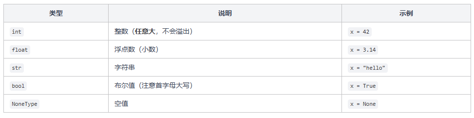

代码
nums = list(map(int, input().split()))
print(nums)
print(f"共 {len(nums)} 个数，总和 = {sum(nums)}")[10, 20, 30, 40]
共 4 个数，总和 = 1002026年8月31日
Python 最大的特点就是简洁，别的语言要写一大堆样板代码，Python 几行就搞定了。它不需要编译，不需要声明变量类型，甚至不需要写 main 函数——打开文件，直接写代码，运行就完事了。
下面我们就从最简单的程序开始。
先看一个最简单的 Python 程序：
不需要 import，不需要 class，不需要 main 函数。Python 的执行方式很直觉：从文件的第一行开始，从上往下逐行执行，就这么简单。
还有一件事要提前说：Python 用缩进来表示代码块，而不是花括号 {}。这意味着缩进不是可选的美化，而是语法的一部分。后面讲到 if、for 的时候你就会看到，缩进错了程序会直接报错。
Python 的注释用 # 开头，# 后面的内容会被忽略：
print() 是 Python 中最常用的输出函数，把内容打印到控制台：
print() 可以接收多个参数，默认用空格隔开，打印完自动换行。
如果你想改变分隔符或者取消自动换行，可以用 sep 和 end 参数：
在字符串前面加一个 f，就可以在花括号 {} 里直接写变量名或表达式，Python 会自动把它们替换成对应的值。这叫 f-string，是 Python 中最常用的字符串格式化方式：
f"{pi:.2f}" 这种写法在算法题中经常用到，比如题目要求”保留两位小数输出”。冒号后面的 .2f 就是格式说明符，.2 表示两位小数，f 表示浮点数格式。
由于本网站是使用quarto进行建造的，没办法输入，此处就以例子来介绍，要自己试的话可以使用自己的python。
input() 从控制台读取一行输入，返回的永远是字符串。即使用户输入的是数字，拿到的也是字符串 “123” 而不是数字 123，要读取数字就需要手动转换类型：
例如我们输入 25，其输出应该为：
很多算法题的输入是一行多个数字，用空格隔开。这时候用 split() 切分，再用 map() 批量转换类型：
这个 map(int, input().split()) 是 Python 算法题中的标准输入套路，建议记住。拆解一下：
input() 读取一行，比如 "3 5".split() 按空格切分成列表 ["3", "5"]map(int, ...) 对列表中每个元素调用 int() 转换a, b = ... 把结果拆包赋值给两个变量如果一行有很多数字需要存到列表里，可以这样：
Python 是动态类型语言，变量不需要声明类型，赋什么值就是什么类型，而且同一个变量可以随时改变类型:
type() 函数可以查看任何值的类型。Python 中最常用的数据类型：

Python 的 int 有一个很大的优势：没有大小限制，不管数字多大都能精确表示，不会溢出。这在处理大数运算的算法题时非常方便，比如 2 1000** 也能精确计算。
10715086071862673209484250490600018105614048117055336074437503883703510511249361224931983788156958581275946729175531468251871452856923140435984577574698574803934567774824230985421074605062371141877954182153046474983581941267398767559165543946077062914571196477686542167660429831652624386837205668069376None 表示”什么都没有”，判断一个变量是否为 None 推荐用 is 而不是 ==：
Python 的类型转换都是用对应的类型名当函数来调用：
int() 转换浮点数时是直接截断小数部分，不是四舍五入。想要四舍五入可以用 round() 函数。
这里有两个重点：
/ 是真除法，17 / 5 的结果是 3.4，不是 3。想要整除要用 //。** 是幂运算，2 ** 10 就是 2 的 10 次方。9 ** 0.5 就是 9 的 0.5 次方，也就是开平方。Python 的链式比较 1 < x < 20很方便，写起来像数学一样自然。逻辑运算符用的是 and、or、not 这三个英文单词，而不是符号。
位运算在处理二进制相关问题时非常高效。这里了解一下基本用法就行：
Python 用缩进来表示代码块，没有花括号。条件后面跟一个冒号 :，下一行缩进（通常 4 个空格，按一下 tab 就行）就是条件成立时要执行的代码：
几个关键点：
:elif 是 "else if" 的缩写Python 的 for 循环用来遍历一个序列（列表、字符串、range 等），语法是 for 变量 in 序列:
range(n) 生成的序列是左闭右开的，从 0 到 n-1。这和数组下标的范围完全一致，用起来非常自然。
for 也可以直接遍历列表、字符串等。如果遍历的同时还需要知道下标，用 enumerate()：
enumerate() 返回的是 (下标, 元素) 的配对，用起来比手动维护一个计数器变量方便多了。
while 循环在条件为真时重复执行：
注意 Python 没有 do-while 循环，也没有 i++ 的写法，自增只能写 i += 1，即等于i = i+1。
break 立刻跳出整个循环，continue 跳过当前这一轮、进入下一轮：
最后来个综合一点的例子，把前面学的输入输出和控制流结合起来：
Python 代码出错时会抛出异常，用 try-except 把它接住继续运行，否则程序会直接停下来。
四件套分工清楚：try 放可能出错的代码，except 匹配并处理异常。else 在没出错时才执行，常放只在成功路径上跑的收尾逻辑；finally 无论成功失败都跑，常用来释放资源。
常见的内置异常类型有 ValueError（值不合法）、TypeError（类型不对）、IndexError（序列越界）、KeyError（字典查不到）、ZeroDivisionError（除零）。
继承关系里 Exception 是大多数业务异常的父类，顶层是 BaseException，KeyboardInterrupt 和 SystemExit 直接继承 BaseException。
raise 可以抛一个新异常。如果在 except 块里空写 raise，表示把当前异常继续往上传。
想保留异常链，就用 raise NewError("...") from e 的写法（这里的 e 就是 except KeyError as e 里捕获到的异常对象），排查时能看到完整的错误来源。
最容易踩的坑是写裸 except:，它会连 Ctrl+C（KeyboardInterrupt）和 SystemExit 都一起吞掉，调试时完全没法退出程序。至少写成 except Exception，才能避开这两类系统级信号。
Python 社区推崇 EAFP（Easier to Ask Forgiveness than Permission，先做再说，出错再处理）的风格。比如查字典里某个 key 是否存在，与其先 if name in scores 再 scores[name]，不如直接 try: scores[name] except KeyError: ...，更简洁也更地道。
这篇介绍了 Python 的基础语法：程序结构、输入输出、变量类型、运算符和控制流。Python 的语法非常贴近自然语言，没有花括号、不需要分号、变量不用声明类型。
几个核心要点回顾：
print() 输出，input() 输入（返回字符串，需要手动转类型）map(int, input().split()) 是读取一行多个整数的标准写法/ 是真除法，// 是整除，** 是幂运算and、or、not 而不是符号